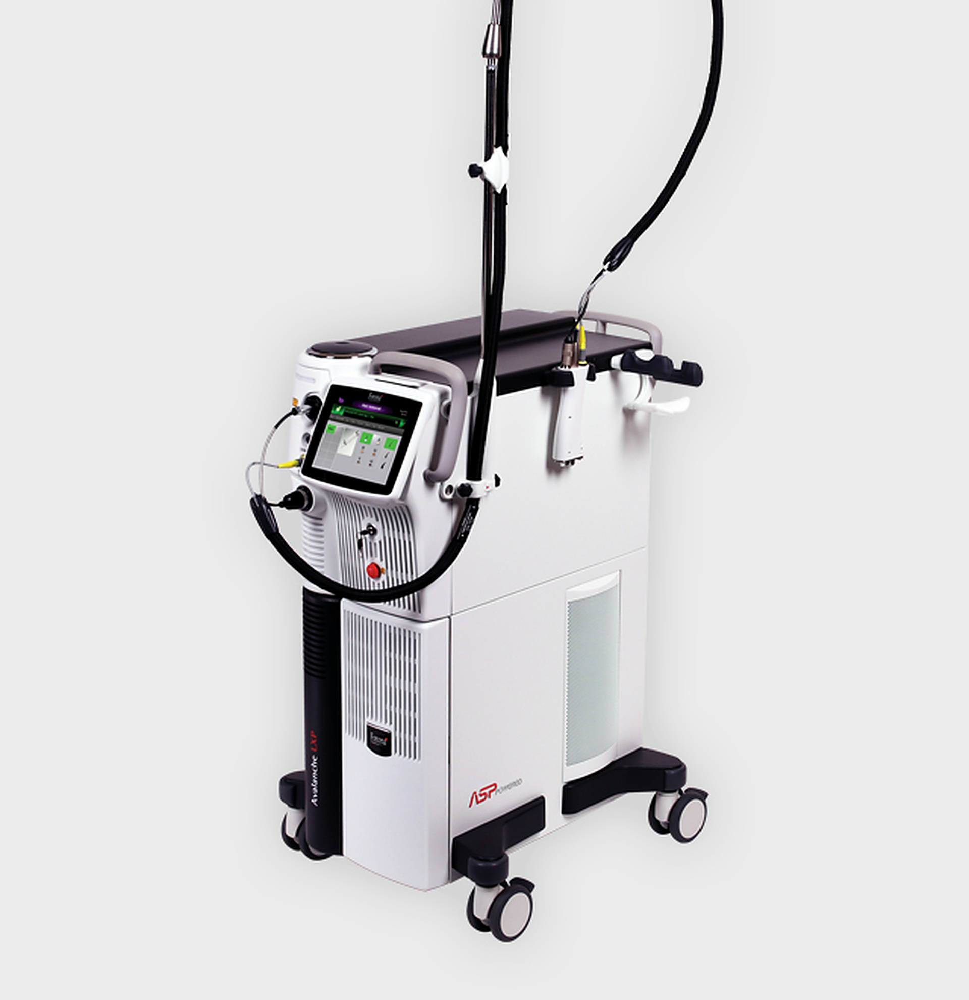
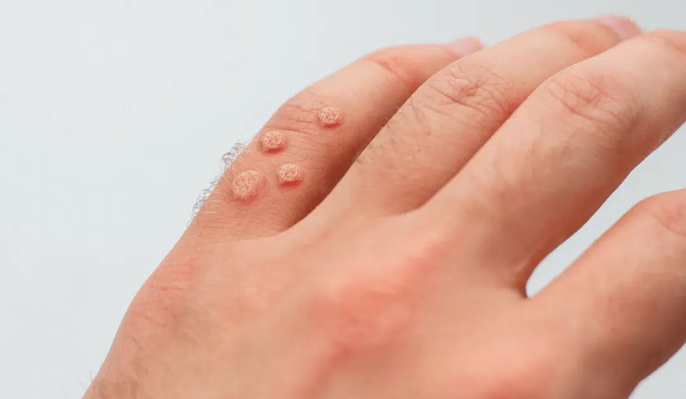
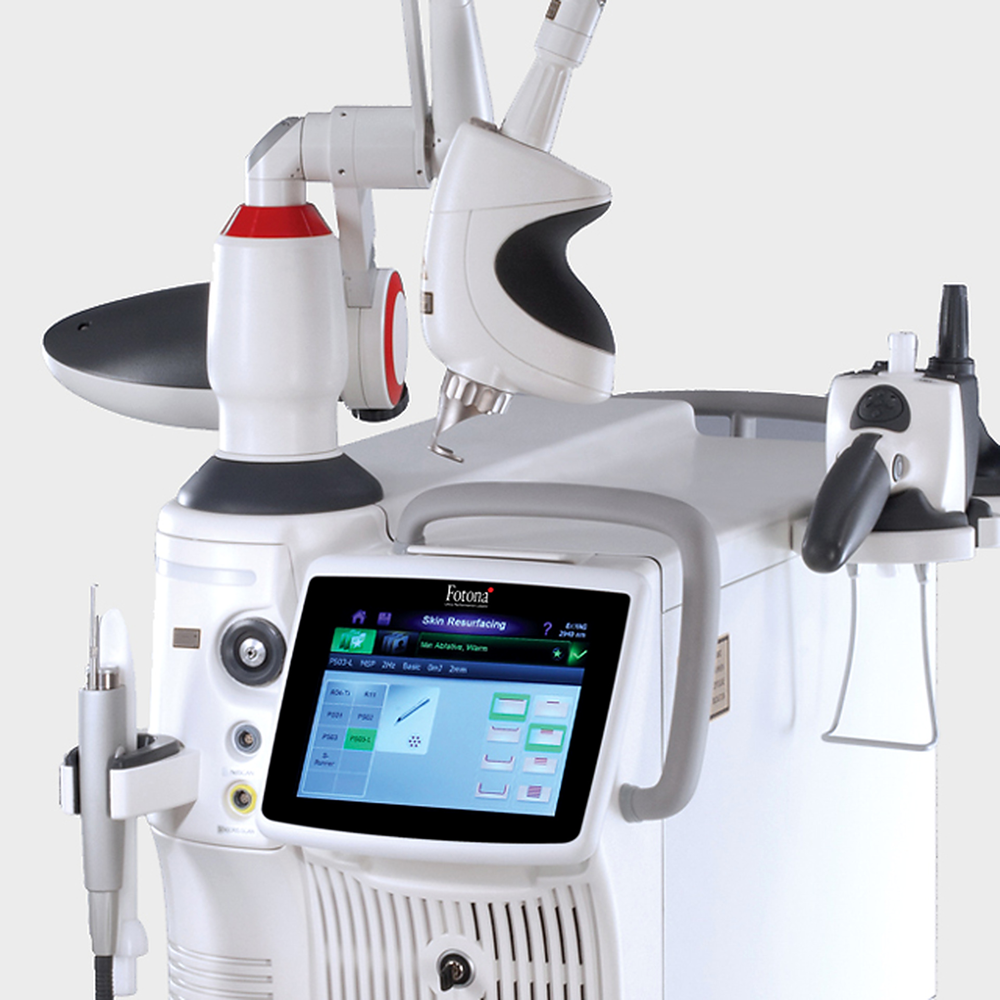
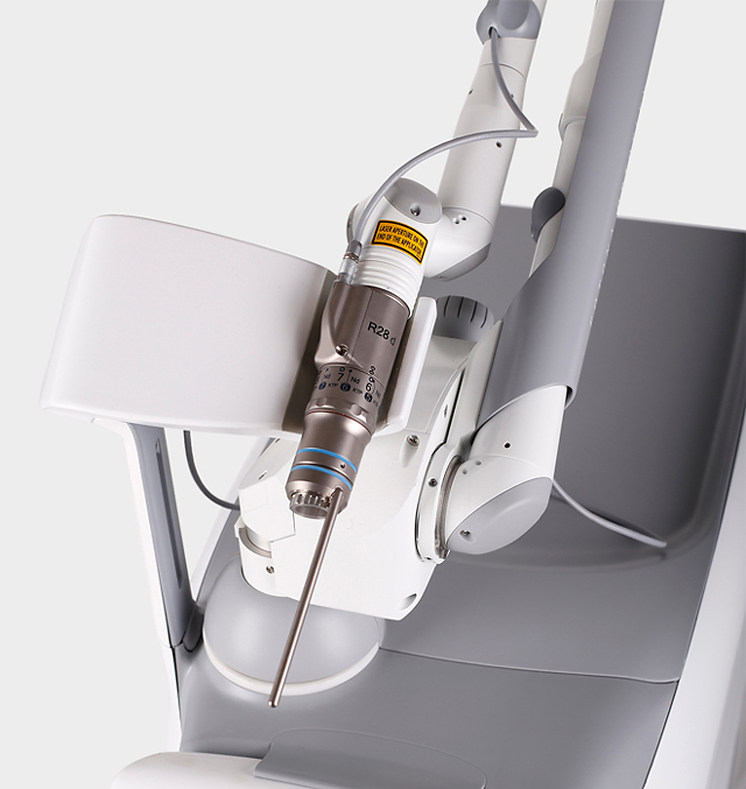

색소 토닝
피부 톤 · 잡티 · 색소 고민

01 / Products
포토나의 레이저 제품과 각 제품의 주요 특징을 확인해 보세요.
PRODUCT 01
듀얼 파장 + 냉각 · 온도 모니터링

AvalancheLase®는 알렉산드라이트(755nm)와 Nd:YAG(1064nm) 두 가지 파장을 하나의 시스템에 결합한 레이저 장비입니다. 파장을 전환할 때 별도의 핸드피스나 스캐너를 교체할 필요 없이 하나의 액세서리로 사용할 수 있어 시술 환경에 유연하게 대응할 수 있습니다.
Fotona의 DMC™ 냉각 기술과 MatrixView® 센서 등 다양한 기술을 결합해 시술의 효율성과 사용자 편의성을 고려한 시스템입니다.
핸드피스와 스캐너에 통합된 DMC™는 실온의 공기와 물을 이용하는 비접촉식 냉각 기술입니다. 피부 표면을 고르게 냉각하도록 설계되어 별도의 차가운 공기 냉각 장치를 추가하지 않고도 사용할 수 있습니다. 제조사 설명에 따르면 과도한 냉각으로 인한 동상 위험을 줄이는 데 목적이 있습니다.
Avalanche 방식은 레이저 펄스를 연속적으로 전달할 때 조사된 모발의 빛 흡수가 점차 증가하는 'Avalanche 효과'를 활용합니다. 펄스가 순차적으로 전달되면서 모발의 빛 흡수가 높아지고, 제조사가 설명하는 방식에 따라 모발 손상에 도달하도록 설계된 원리입니다.
이 원리를 적용한 멀티패스·저플루언스 모드는 한 번의 강한 조사보다 여러 차례의 펄스를 나누어 전달하는 방식입니다. 실제 시술 조건과 결과는 개인의 피부 및 모발 상태, 의료진의 판단 등에 따라 달라질 수 있습니다.
피부 톤 · 잡티 · 색소 고민

불필요한 체모 · 매끄러운 피부

트러블 · 피부 컨디션

사마귀 · 피부 병변 · 피부 고민
PRODUCT 02
Er:YAG 및 VSP 기술

XS Dynamis는 Er:YAG 레이저를 기반으로 피부 재생(Resurfacing)을 위한 다양한 시술 설정을 제공하는 시스템입니다. 얕은 박피부터 깊은 박피까지, 비박피 방식부터 박피 방식까지 폭넓게 설정할 수 있으며 전체 조사(Full-field)와 프랙셔널(Fractional) 방식도 지원합니다.
시술 목적과 피부 상태에 따라 세부 설정을 조정할 수 있어 피부 재생과 흉터 개선 등 여러 피부과·에스테틱 분야에 활용됩니다.
Er:YAG 레이저는 피부 조직에 포함된 수분에 에너지가 잘 흡수되는 특성이 있습니다. 이를 이용해 피부 표면을 미세한 단위로 제거하며, 주변 조직으로 전달되는 열을 줄이도록 설계된 것이 특징입니다.
Fotona의 VSP 기술은 레이저 펄스의 특성을 조절해 박피(Ablation)와 열 응고(Coagulation)의 비율을 세밀하게 설정할 수 있도록 돕습니다. 이를 통해 시술 목적과 피부 상태에 맞춰 에너지 작용 방식을 조정할 수 있습니다.
F-Runner는 피부 전체를 한 번에 조사하는 대신 작은 미세 채널을 일정한 패턴으로 형성하는 방식입니다. 조사되지 않은 주변 피부가 남아 있어 회복 과정을 돕도록 설계되었으며, 제조사 자료는 미세 채널의 직경을 약 250µm로 안내합니다.
피부 톤 · 잡티 · 색소 고민
트러블 · 피부 컨디션

여드름 흉터 · 피부 결
PRODUCT 03
4개 파장 · 15가지 레이저 모달리티

StarWalker QX는 4개의 파장과 15가지 레이저 모달리티를 결합한 다목적 레이저 시스템입니다. 다양한 에스테틱 분야에 활용할 수 있으며, 특히 여러 색상의 문신과 피부 색소 병변을 대상으로 하는 레이저 시술에 활용됩니다.
Fotona의 FracTAT® 시술과 짧은 펄스 기반 기술을 포함해 문신 제거부터 색소 관련 시술, 혈관 관련 시술까지 폭넓은 활용을 지원하도록 설계되었습니다.
ASP 기술은 레이저 펄스의 시간적 구조를 조절하는 기술입니다. 기존 VSP의 다양한 펄스 지속시간 설정에 더해, 레이저와 조직의 상호작용 특성에 맞춰 펄스 구조를 조정하도록 설계되었습니다.
VSP는 레이저 펄스의 지속시간과 형태를 조절하는 기술입니다. ASP와 함께 사용되어 시술 목적에 맞는 펄스 조건을 설정할 수 있도록 합니다.
제조사 자료에 따르면 TMD(Transverse Mode Discrimination) 레이저 발진기 기술과 ASP 펄스 제어를 결합해 약 5ns의 짧은 Q-switched 펄스를 구현합니다. MaQX는 높은 에너지의 구조화된 펄스를 전달해 색소 입자에 광음향 효과를 유도하는 방식으로 설명됩니다.
VERSA3는 적외선 장펄스 모드이며, VERDE는 녹색 파장을 사용하는 모드입니다. 제조사는 두 모드를 혈관 관련 시술을 위한 선택지로 소개하고 있습니다.
피부 톤 · 잡티 · 색소 고민

문신 색소 · 제거 시술
NEXT STEP / DEMO REQUEST
제품에 대한 자세한 상담과 데모 신청은 아래 페이지에서 확인할 수 있습니다.
데모 신청하기